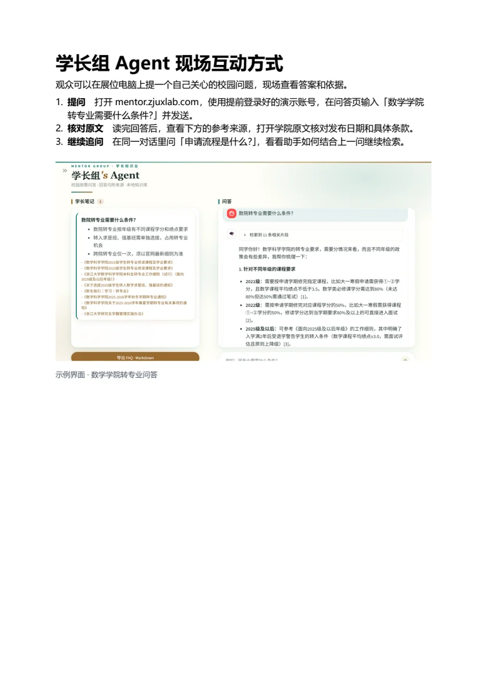

返回软件项目索引
返回软件项目索引S03 / 软件团队 · 软件展示
学长组 Agent
阅读项目文档 ↓想查浙大的转专业条件、推免规则或奖助政策时，相关信息往往分散在不同学院和部处的网站上，同一事项也可能有不同年份的通知。学长组 Agent 是面向浙大学生的网页问答工具。输入问题后，它从整理过的校内政策、通知和办事指南中检索资料，结合上下文回答，并在回答下方列出来源。以「数学学院转专业需要什么条件？」为例，可以先看条件摘要，再打开原文核对适用对象、发布日期和具体条款，也可以继续追问申请流程。遇到资料不足的问题，系统会提示暂时无法确认。除了政策问答，它还支持查课程和授课教师，可以用「数分」这类同学常用的简称找到具体课程，再查看教师评分和评教摘录，作为选课参考。


项目文档
团队提交的项目说明
一页介绍我们的项目
项目名 学长组 Agent 小组名 学长组 Agent 项目组
1 你们想做什么？
我们想做一个浙大学生能直接提问的网页助手。转专业、推免、奖助这些事可以在同一个地方
查，看到答案后也能点开原文核对。
2 为什么想到做这件事？
比如，想转入数学学院的同学，往往要翻学院官网、找当年的通知，还要确认看到的是哪一年
的要求。我们想把找通知和核对要求这两步放到同一个页面里。
3 能带我们走一遍吗？
先在网页输入「数学学院转专业需要什么条件？」系统会整理查到的要求，并列出对应来源。接
着可以打开学院原文核对具体条款，或者在原对话里追问「申请流程是什么？」
4 现在做到哪一步了？
我们已经做出了可操作的网页版本，能演示政策问答、查看引用和继续追问。也可以用「数分」
这样的课程简称查找具体课程，再看授课教师的评教信息。
附上的材料
《演示视频.mp4》约 54 秒。可以看提问后回答逐步出现，以及如何展开参考片段核对来源。